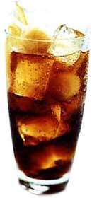

Cacharro
 De: La Frikipedia, la enciclopedia extremadamente seria.
De: La Frikipedia, la enciclopedia extremadamente seria.
 Pese a su aspecto apetitoso, esto en realidad es veneno.
Líquido con una alta tendencia a la evaporación debido a su alta concentración de alcoholazo que normalmente está contenido en vasos de tubo y se sirve frío (en teoría) en bares, discotecas y botellones. Su composición puede variar de un tipo a otro pero normalmente las proporciones son las siguientes:
- Una parte por millón de licor. Para darle ese sabor característico.
- Tres sextas partes de una substancia desconocida, transparente, inodora y sin sabor llamada garrafón. Para las resacas y los dolores de cabeza del día siguiente.
- 1 sexta parte de agua en forma de hielo (amarillo en inglés). Para mantener frío el mejunje y que no pierda sus propiedades nutricionales.
- 1 sexta parte de agua en forma de agua. Para que el que tenga el bareto se forre todos los fines de semana con la receta.
- 1 sexta parte de refresco. Para que recordemos los felices años de la infancia y así alimentar la neurosis y la depresión y por ende aumentar el consumo compulsivo de estos caldos.
- El vaso. Para partirlo en el cráneo del mamonazo que tienes al lado que se ha bebido más que tú y que intenta achantarte el planazo que acabas de conseguir hace cinco minutos con la rubia de las tetas gordas (que normalmente ni suele ser rubia, ni guapa, ni tiene tanto pecho la verdad...).
Todos estas sustancias suelen encontrarse fácilmente en sex-shops, droguerías, farmacias y otros establecimientos dedicados a la alimentación a un precio relativamente económico. Sin embargo la falta de limitación que tiene la estupidez humana empuja a sus especímenes todos los fines de semana a llenar los lugares donde se sirve o se mezcla y pulirse lo ganado durante la semana para después no acordarse nadie de nada de lo que ocurrió la noche anterior.
Enlaces Externos
Autor(es):
- Pakolo
- Doctor grijander
- Epikurolibre
- Viento
- Khazike Khashondo
Frikipedia 2005-2016, Licencia
GFDL 1.2 - Extraído por FrikiLeaks